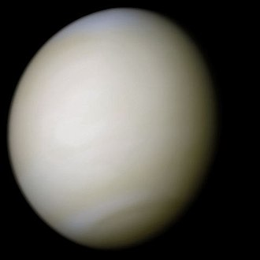
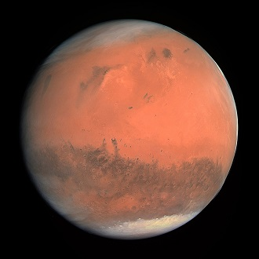
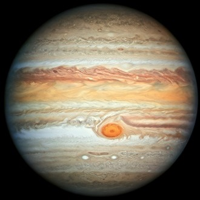
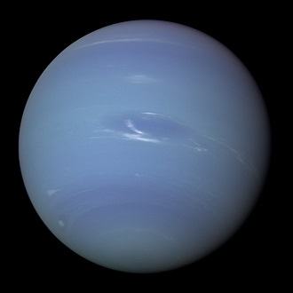

| Planets -> Stats ↓ |
 Venus |
 Mars |
 Jupiter |
 Neptune |
|---|---|---|---|---|
| Mass (kg) | 4.87 x 1024 | 6.42 x 1023 | 1.90 x 1027 | 1.02 x 1026 |
| Diameter(km) | 12,104 | 6,787 | 142,800 | 49,528 |
| Mean Density (kg/m3) | 5,250 | 3,940 | 1,314 | 1,640 |
| Escape Velocity (m/s) | 10,400 | 5,000 | 59,500 | 23,300 |
| Avg Distance from Sun | 0.723 AU (108,208,930 km) |
1.524 AU (227,936,640 km) |
5.203 AU (778,412,020 km) |
30.07 AU (4,498,252,900 km) |
| Rotation Period (length of day in Earth days) | 243.02 (retrograde) | 1.026 | 0.41 (9.8 Earth hours) | 0.67 (19.1 hours) |
| Revolution Period (length of year in Earth days) | 224.7 | 686.98 | 11.86 | 60,190 (164.8 Earth years) |